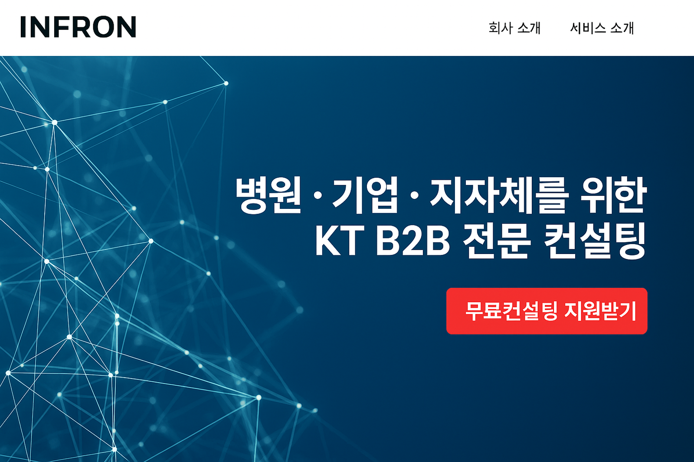

회사 소개
INFRON
은 기업, 병원, 지자체 고객을 위한 KT B2B 전문 컨설팅 대리점입니다. 통신 및 네트워크 기술을 바탕으로 고객의 Pain Point를 해결합니다.
상품 안내
Flexline
(Basic / Premium): 고정 IP 및 보안장비 포함 기업 전용 회선
기업인터넷전화
(Biz / Centrex)
KT 매니지드 서비스
: 무선랜 AP 및 보안 솔루션
고객 사례 / Pain Point 해결
신축 병원
: 병상TV + 전자차트용 네트워크 + 보안장비로 의료법 대응
중소기업
: 고장·노후 키폰 → KT 인터넷전화로 비용절감과 통화품질 향상
게임특성화고
: 가정용 회선 → 기가오피스로 민원 해결
상담 신청
무료 컨설팅 신청